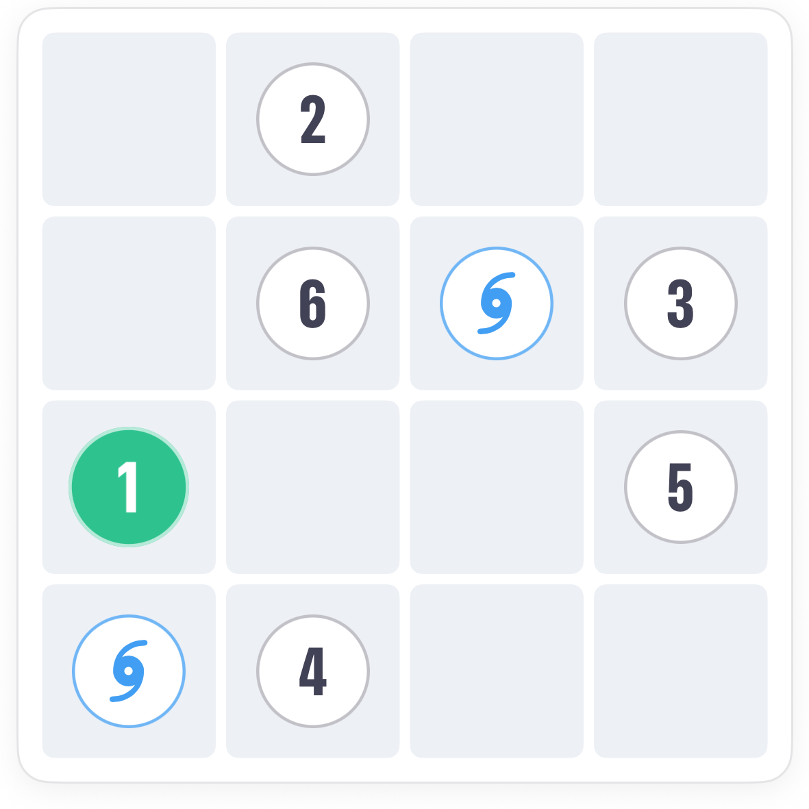
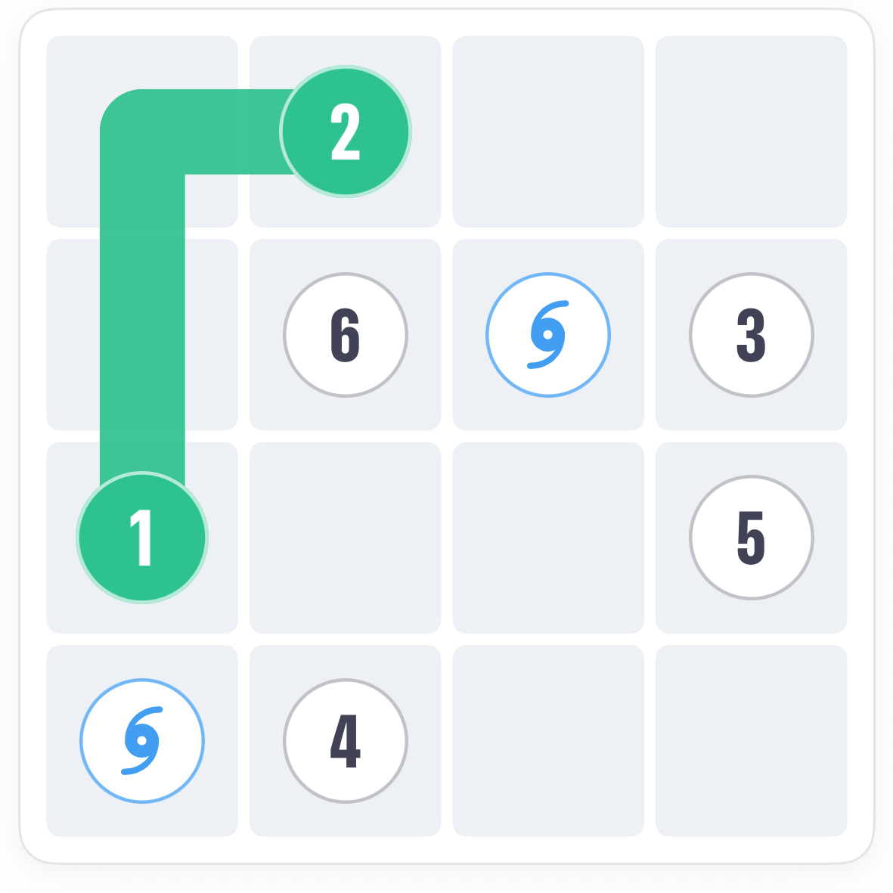
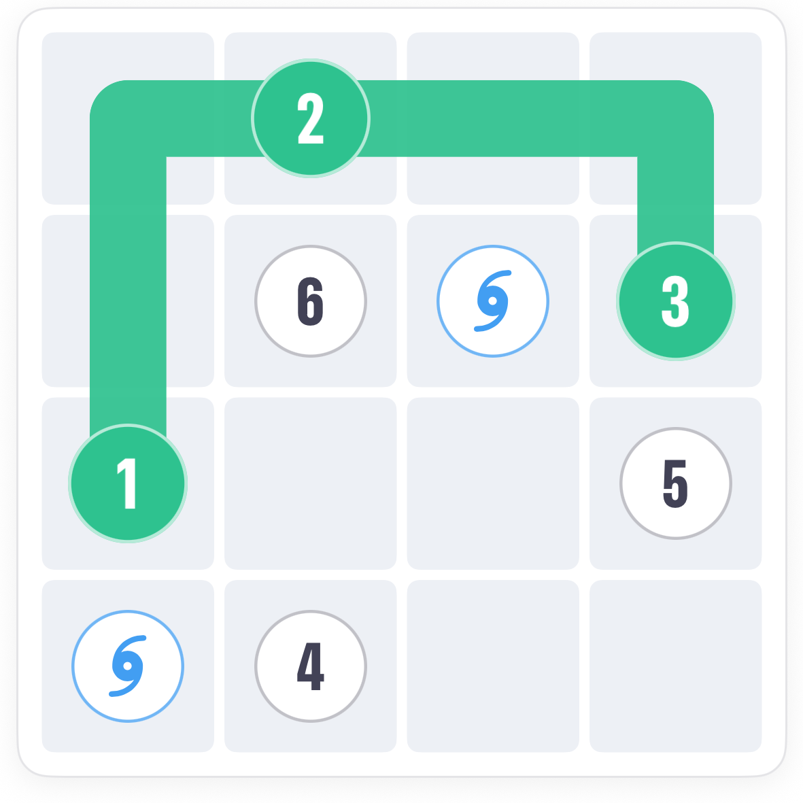
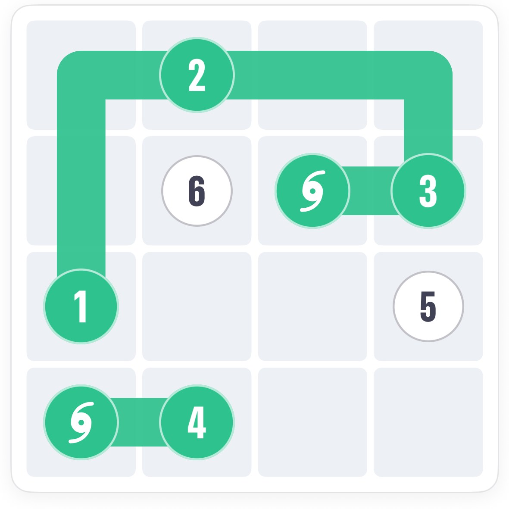
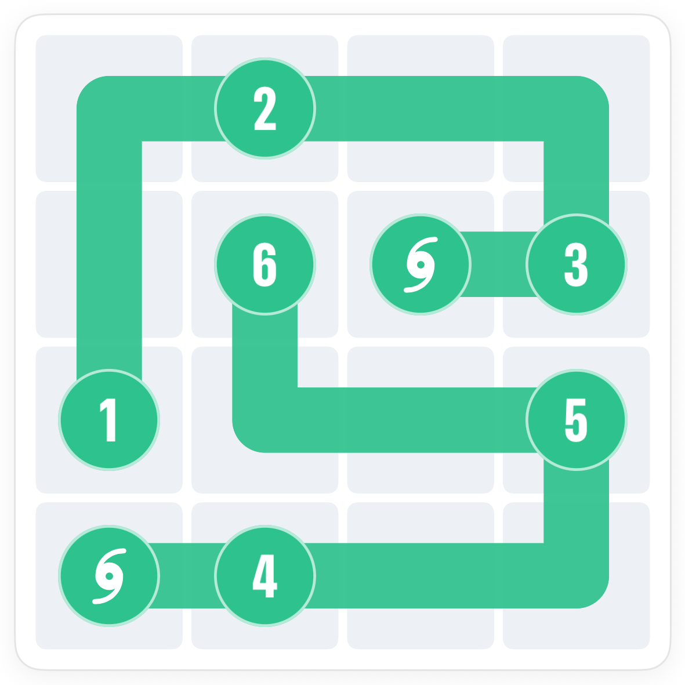

How to play Portals Slink.
Portals is Slink with a pair of doorways on the board. Slide your trail onto one and it comes out of the other. Every square still has to be covered exactly once, so the jump has to happen at the right moment.
The board.
The numbers 1 to 6 as usual, and two squares with a swirl: the portals. They are a pair. Enter one, leave the other.

The rule.
Portals work in both directions, but you pass through once. Jump too early and squares get stranded behind you.
Read the route before you jump.
Trace the board in your head first. The portal has to sit in your route at a point where the squares before it are all covered and the squares after it are all still free.




Common questions.
Do I have to use the portal?
Yes. The portal squares must be covered like any other, and stepping onto one always sends you through.
Which direction does it go?
Either. Enter from whichever end your route reaches first; only one direction will fit the whole board.